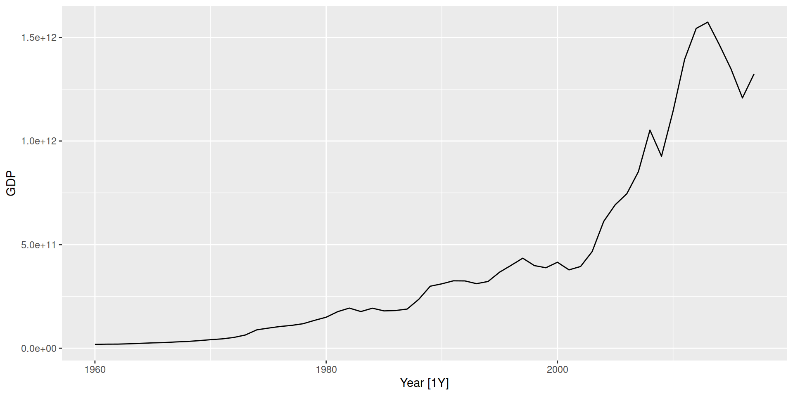
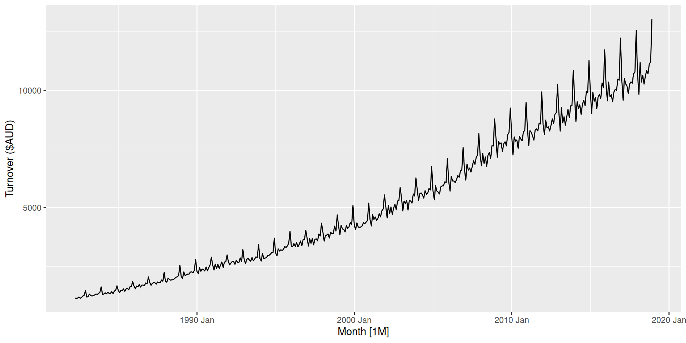

Tidy time series analysis and forecasting
Transforming and decomposing time series patterns
20th June 2024 @ UM6P F4SG
Mitchell O’Hara-Wild, Nectric

Transformations of time series
Transformations use used in time series to:
- Reveal actual underlying patterns
- Simplify the data to make modelling easier
Your turn
What are some useful transformations that you’ve seen used on data before?
Can you think of transformations that would be useful for time series?

Population adjustment
Useful in comparing populations of different size. Per capita adjustments are commonly used to compare GDP between countries.


Mathematical transformations
If the data show different variation at different levels of the series, then a transformation can be useful.
Useful transformations
Denote original observations as \(y_1,\dots,y_n\) and transformed observations as \(w_1, \dots, w_n\).
- Square root, \(w_t = \sqrt{y_t}\)
- Cube root, \(w_t = \sqrt[3]{y_t}\)
- Logarithm, \(w_t = \text{log}(y_t)\)
Logarithms are particularly useful because they are more interpretable. Changes in a log value are relative (percent) changes on the original scale.

Mathematical transformations
food <- aus_retail |>
filter(Industry == "Food retailing") |>
summarise(Turnover = sum(Turnover))
food |> autoplot(Turnover) +
labs(y = "Turnover ($AUD)")
The growing seasonal variance is known as ‘multiplicative’ seasonality. It is very common for time series to do this.
Box-Cox transformations
Each of these transformations is close to a member of the family of Box-Cox transformations: \[w_t = \left\{\begin{array}{ll} \text{log}(y_t), & \quad \lambda = 0; \\ (\text{sign}(y_t)|y_t|^\lambda-1)/\lambda , & \quad \lambda \ne 0. \end{array}\right.\]
Common transformations
- \(\lambda=1\): (No substantive transformation)
- \(\lambda=\frac{1}{2}\): (Square root plus linear transformation)
- \(\lambda=0\): (Natural logarithm)
- \(\lambda=-1\): (Inverse plus 1)
Box-Cox transformations
The \(\lambda\) parameter can be automatically selected.
- This attempts to balance the seasonal fluctuations and random variation across the series.
- Always check the results.
- A low value of \(\lambda\) can give extremely large prediction intervals.
Mathematical transformations
Useful transformations
- Often no transformation needed.
- Simple transformations are easier to explain and work well enough.
- Transformations can have very large effect on forecasts.
- If some data are zero or negative, then use \(\lambda>0\).
log1p()can also be useful for data with zeros.- Choosing logs is a simple way to force forecasts to be positive
- Transformations must be reversed to obtain forecasts on the original scale. (Handled automatically by
fable.)
Transformations
Your turn
For the following series, find an appropriate transformation in order to simplify the patterns.
- United States GDP from
global_economy - Slaughter of Victorian “Bulls, bullocks and steers” in
aus_livestock - Victorian Electricity Demand from
vic_elec. - Gas production from
aus_production
- United States GDP from
Why is a Box-Cox transformation unhelpful for the
canadian_gasdata?
Decomposition
Decomposition is the process of spliting a time series into components, usually consisting of patterns in the data.
This is achieved by modelling the patterns, then extracting the contribution of those patterns in the model.

Decomposition
Additive decompositions
Today we’ll learn about one useful type of decomposition: additive decomposition via STL.
It decomposes the:
Trend-Cycle: aperiodic changes in level over time.
Seasonality: periodic changes in level due to seasons (e.g., quarter of year, day of week, or hour of day).
Remainder: unexplained changes not captured by other components.
\[y_t = S_t + T_t + R_t\]
where \(y_t\) is the data, \(T_t\) is the trend-cycle, \(S_t\) is the seasonality, and \(R_t\) is the remainder at time \(t\).
STL Decomposition
STL is decomposes trend and seasonality using localised regression (loess).
A lot to like
- Very versatile and robust.
- Trend and seasonality can change over time.
- Rate of change (smoothness) controlled by user.
- Optionally robust to outliers.
Some limitations
- No trading day or calendar adjustments.
- Only decomposes additive patterns.
Decomposing US employment
us_retail_employment <- us_employment |>
filter(year(Month) >= 1990, Title == "Retail Trade") |>
select(-Series_ID)
us_retail_employment# A tsibble: 357 x 3 [1M]
Month Title Employed
<mth> <chr> <dbl>
1 1990 Jan Retail Trade 13256.
2 1990 Feb Retail Trade 12966.
3 1990 Mar Retail Trade 12938.
4 1990 Apr Retail Trade 13012.
5 1990 May Retail Trade 13108.
6 1990 Jun Retail Trade 13183.
7 1990 Jul Retail Trade 13170.
8 1990 Aug Retail Trade 13160.
9 1990 Sep Retail Trade 13113.
10 1990 Oct Retail Trade 13185.
# i 347 more rows
Decomposing US employment
# A dable: 357 x 7 [1M]
# Key: .model [1]
# : Employed = trend + season_year + remainder
.model Month Employed trend season_year remainder season_adjust
<chr> <mth> <dbl> <dbl> <dbl> <dbl> <dbl>
1 stl 1990 Jan 13256. 13288. -33.0 0.836 13289.
2 stl 1990 Feb 12966. 13269. -258. -44.6 13224.
3 stl 1990 Mar 12938. 13250. -290. -22.1 13228.
4 stl 1990 Apr 13012. 13231. -220. 1.05 13232.
5 stl 1990 May 13108. 13211. -114. 11.3 13223.
6 stl 1990 Jun 13183. 13192. -24.3 15.5 13207.
7 stl 1990 Jul 13170. 13172. -23.2 21.6 13193.
8 stl 1990 Aug 13160. 13151. -9.52 17.8 13169.
9 stl 1990 Sep 13113. 13131. -39.5 22.0 13153.
10 stl 1990 Oct 13185. 13110. 61.6 13.2 13124.
# i 347 more rows
Seasonal adjustment
- Useful by-product of decomposition: an easy way to calculate seasonally adjusted data.
- Additive decomposition: seasonally adjusted data given by \[y_t - S_t = T_t + R_t\]
- Multiplicative decomposition: seasonally adjusted data given by \[y_t / S_t = T_t \times R_t\]
Seasonal adjustment
- We use estimates of \(S\) based on past values to seasonally adjust a current value.
- Seasonally adjusted series reflect remainders as well as trend. Therefore they are not “smooth” and “downturns” or “upturns” can be misleading.
- It is better to use the trend-cycle component to look for turning points.
Tuning STL decomposition
In many cases a decomposition can be improved by adjusting the default model parameters.
Ideal decompositions
A good decomposition will accurately separate the patterns. The window should be chosen such that the components are smooth, but not so smooth that their effects are seen in other components.
Tuning STL decomposition
There are many parameters that can adjust an STL decomposition, but the most useful one is the window size.
Component windows
Windows control how quickly each component adapts to change.
trend(window = ?)controls wiggliness of trend component.season(window = ?)controls variation on seasonal component.season(window = 'periodic')is equivalent to an infinite window.
A small window will react quickly to changes, and a large window will produce smoother components.
STL decomposition
Your turn
Produce the following decomposition
What happens as you change the values of the two
windowarguments?How does the seasonal shape change over time? [Hint: Try plotting the seasonal component using
gg_season.]Can you produce a plausible seasonally adjusted series? [Hint:
season_adjustis one of the variables returned bySTL.]
⏰ That’s all for today!
Next week…
- Specifying time series models,
- Training models on data,
- Evaluating model accuracy,
- Forecasting the future!